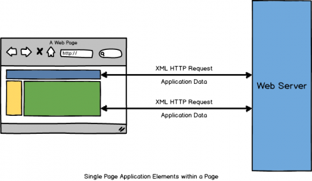

Mickael Jeanroy
mickael.jeanroy@zenika.com
INSA LYON - IF 2015
13 / 10 / 2015
Who am I ?
Programme
- Zenika
- Javascript - ES5 - ES6
- Ecosystème & Industrialisation
- Angular.js : principes
- Angular.js : templates, contrôleurs, filtres
Du code, beaucoup de code !

- SSII fondée en 2006
- Présent à Paris, Lyon, Rennes, Nantes, Lille et Bordeau
- Développement, Architecture, Formations
- 4ème au classement "Great Place To Work" 2015
- 7ème au classement "Happy Trainees" 2015
Stages (https://jobs.zenika.com/les-offres/)
- Générateur Yeoman (Lyon) : participation active à un projet Open Source sur le projet de générateurs Yeoman.
- Outil de gestion de Logs (Lyon) : Tenter de faire mieux que Logstash.
- Conception et à la réalisation de projets internes basés sur les meilleurs outils et Frameworks Java (Paris).
- Projet de R&D innovant en relation avec la Direction Technique (Paris).
Javascript
Introduction
- Créé en 1995 par Brendan Eich pour Netscape
-
Standardisé: ECMAScript
- ECMAScript 3 : 1999
- ECMAScript 5 : 2009
- ECMAScript 6 : 2015 !
- ECMAScript 5 est la version la mieux implémentée dans les navigateurs (Chrome, Firefox, Safari, IE10)
- ECMAScript 6 : besoin d'une phase de build (babel, traceur)
Javascript
Introduction
- Langage de script
-
S'exécute dans une VM (Virtual Machine)
- Browser: V8 (Chrome) ; SpiderMonkey (Firefox) ; JavaScriptCore (Safari) etc.
- Serveur: V8 (Node.JS) ; Rhino / Nashorn (Java) etc.
- La mémoire est gérée grâce à un garbage collector
- Langage dynamique
- Langage faiblement typé
- Langage orienté prototype
Javascript
Debug
- Le plus basique: console.log
- Permet de laisser des traces sur les appels
- Certains navigateurs proposent des features
- console.table()
- console.time()
- console.memory etc.
// Fonction nommée "foo"
function foo() {
console.log('hello world', 'hello bar');
}
Javascript
Debug
- Chrome Dev Tools : le meilleur !
- Firebug / Firefox Developer Edition
- Safari Web Inspector
- Opera DragonFly
- IE : présent depuis IE9
Javascript
Introduction

Javascript
Introduction

Javascript
Introduction

Javascript
Introduction

Javascript
Un langage faiblement typé
- Le mot clé "var" permet de déclarer une variable
- Peu de type: number, string, boolean, function, null
- Une variable sans aucune valeur est "undefined"
- Les objets et les tableaux permettent de les composer
- Une variable n'a pas de type fixe (typage dynamique)
var foo;
console.log(foo); // 'undefined'
console.log(typeof foo); // 'undefined'
foo = 5;
console.log(typeof foo); // 'number'
foo = 'string';
console.log(typeof foo); // 'string'
foo = true;
console.log(typeof foo); // 'boolean'
Javascript
Les tableaux
- Une seule structure de données: les tableaux
- Suite ordonnée d'éléments, chaque élément étant accessible par son index
- La propriété "length" donne la taille du tableau
var foo = [1, 2, 3];
console.log(foo); // [1, 2, 3]
foo.push('string', true);
console.log(foo); // [1, 2, 3, 'string', true]
console.log(foo.length); // 5
console.log(foo[4]); // true
console.log(foo[5]); // undefined
Javascript
Les objets
- En javascript, un objet est dynamique: on peut lui rajouter un attribut au runtime
- Ni plus, ni moins qu'une map clé valeur
var foo = {};
console.log(typeof foo); // 'object'
console.log(foo); // {}
foo = {
id: 1
};
console.log(foo); // {id: 1}
foo.name = 'Mickael';
console.log(foo); // {id: 1, name: 'Mickael'}
foo.skills = ['Js', 'Java'];
console.log(foo.skills); // ['Js', 'Java']
console.log(foo['skills']); // ['Js', 'Java']
Javascript
Spécificités
-
En javascript, on distingue égalité et égalité stricte
- L'opérateur "==" (négation: "!=") permet de comparer deux objets indépendamment du type
- L'opérateur "===" (négation: "!==") permet de comparer deux objets en prenant en compte les types
- Pour le cas des objets et des tableaux, c'est toujours une comparaison d'instance qui est faite!
var foo = 1;
var bar = '1';
console.log(foo == bar); // true
console.log(foo === bar); // false
console.log([1, 2, 3] == [1, 2, 3]); // false
console.log([1, 2, 3] === [1, 2, 3]); // false
Javascript
Spécificités
- Question : qu'affiche ce code ?
console.log('' == '0'); // ???
console.log('' == 0); // ???
console.log('0' == 0); // ???
Javascript
Spécificités
WTF ??
console.log('' == '0'); // false
console.log('' == 0); // true
console.log('0' == 0); // true
Javascript
Spécificités
http://www.ecma-international.org/ecma-262/5.1/#sec-11.9.1
Javascript
Spécificités
- Pour simplifier: Javascript essaye de rapprocher les variables vers deux types identiques.
-
Cela peut amener à quelques spécificités un peu "étranges"
- Opérateur non transitif
- Opérateur non réflexif
- Simplifiez-vous la vie : utilisez toujours l'égalité stricte !
Javascript
Un langage orienté fonctionnel
- En javascript, les fonctions sont partout
- Une fonction est un type comme un autre (objet de type "function")
- Une fonction peut être nommée ou anonyme
// Fonction nommée "foo"
function foo() {
console.log('hello world');
}
foo();
// Fonction anonyme qu'on affecte à une variable "foo"
var foo = function () {
console.log('hello world');
};
foo();
Javascript
Un langage orienté fonctionnel
- Une fonction a un nombre de paramètre variable
- Le mot clé "arguments" au sein d'une fonction permet de récupérer la liste des paramètres
- Une fonction peut ne rien retourner
// Fonction nommée "foo"
function foo(param1, param2) {
console.log(param1, param2, 'arguments = ', arguments);
if (param1 === 1) {
return true;
}
}
foo(); // undefined, undefinfed, arguments = []
foo(1); // 1, undefinfed, arguments = [1]
foo(1, 2); // 1, 2, arguments = [1, 2]
foo(1, 2, 3); // 1, 2, arguments = [1, 2, 3]
Javascript
Un langage orienté fonctionnel
- Une fonction peut être donnée en paramètre à une autre fonction
- Une fonction peut retourner une autre fonction
- En langage fonctionnel, de telles fonctions sont appelées fonctions d'ordre supérieur
Javascript
Un langage orienté fonctionnel
// Fonction nommée "foo": cette fonction prend en paramètre une fonction
// à exécuter
function foo(func) {
func();
}
// Ce code donne une fonction anonyme en paramètre de la fonction "foo"
foo(function () {
console.log('hello world');
});
// Ce code déclare une fonction nommée "myFunc"
// Cette fonction est ensuite donnée en paramètre de la fonction "foo"
function myFunc() {
console.log('hello world');
}
foo(myFunc);
Javascript
Un langage orienté fonctionnel
// Fonction nommée "foo"
// Cette fonction renvoie une fonction permettant de "logguer" le
// contenu d'un tableau lorsqu'elle est exécutée
function add(op1) {
return function (op2) {
return op1 + op2;
};
}
var r1 = add(5)(10);
console.log(r1); // 15
var addFn = add(5);
var r2 = addFn(10);
console.log(r2); // 15
Javascript
Un langage orienté fonctionnel
- Une fonction peut également être affectée à un attribut d'un objet
// On déclare un objet avec une fonction comme attribut
var batman = {
name: 'Batman',
speak: function () {
console.log('I am Batman');
}
};
console.log(batman); // {name: "Batman", speak: function}
console.log(typeof batman.speak); // 'function'
// Exécution de la fonction
batman.speak(); // 'I am Batman'
Javascript
Un langage orienté fonctionnel
- Les fonctions sont le coeur du langage
- Avec Angular.js, on manipule des fonctions tout le temps
Javascript
Un langage orienté fonctionnel
Comme beaucoup de langages fonctionnels, ECMAScript 5 rajoute des fonctions de manipulation de listes: forEach, map, some, every, reduce etc.
// Exécute une fonction sur chaque élément d'un tableau
[1, 2, 3].forEach(function (current, idx) {
console.log(current, idx);
});
// Applique une transformation à chaque élément et retourne
// un nouveau tableau contenant tous les résultas
// Ex: Multiplication par deux de tous les éléments
var newArray = [1, 2, 3].map(function (current) {
return current * 2;
});
console.log(newArray); // 2, 4, 6
Javascript
Un langage orienté fonctionnel
// Vérifie une condition sur chaque élément d'un tableau
// Est-ce que tous les éléments sont pairs ?
[2, 4, 6].every(function (current) {
return current % 2 === 0;
});
// Vérifie qu'une condition est vérifié sur au moins un élément d'un tableau
// Est-ce qu'au moins un élément est pair ?
[1, 2, 3].some(function (current) {
return current % 2 === 0;
});
// Réduit le contenu du tableau à une valeur
// Ex: somme de tous les éléments du tableau
var reduceValue = [1, 2, 3].reduce(function (memo, current) {
return memo + current;
}, 0);
console.log(reduceValue); // 6
Javascript
Un langage orienté prototype
- Le langage Javascript n'est pas un langage orienté objet
- Mais, cela ne signifie pas qu'on ne peut utiliser des objets !
-
Cela nécessite la manipulation de prototype
- Compliqué, surtout quand on débute
- ECMAScript 6 vient masquer cette complexité grâce à l'introduction des classes
Javascript
Un langage orienté prototype
- Chaque objet dispose d'un "prototype"
- Un prototype n'est rien de plus qu'une liste de propriétés (a.k.a un objet) partagé par toutes les instances d'un même type
var Hero = function (name) {
this.name = name;
};
Hero.prototype = {
speak: function () {
console.log('I am ' + this.name);
}
};
var batman = new Hero('Batman'); // I am Batman
var superman = new Hero('Superman'); // I am Superman
console.log(batman.speak === superman.speak); // true
Javascript
Un langage orienté prototype
- Chaque objet dispose d'un "prototype"
- Un prototype n'est rien de plus qu'une liste de propriétés (a.k.a un objet) partagé par toutes les instances d'un même type
var Hero = function (name) {
this.name = name;
};
Hero.prototype = {
speak: function () {
console.log('I am ' + this.name);
}
};
var batman = new Hero('Batman'); // I am Batman
var superman = new Hero('Superman'); // I am Superman
console.log(batman.speak === superman.speak); // true
JavaScript - ECMAScript 6
- Introduit un ensemble de features visant à simplifier ECMAScript 5
-
Beaucoup de sucre syntaxique au dessus d'ES5
- Classes
- Arrow Functions
- Mots clés let et const
- Etc.
- Mais pas que : modules, iterators, generators, etc.
JavaScript - ECMAScript 6
Pourquoi apprendre ES6 ?
- Nouveau standard : c'est l'avenir
-
Langage poussé sur les prochaines versions des librairies les plus populaires :
- Angular 2
- React
- Twitter Bootstrap
JavaScript - ECMAScript 6
Les classes
class Hero extends Human {
constructor(name) {
super();
this.name = name;
}
speak() {
console.log('I am ' + this.name);
}
}
var batman = new Hero('Batman'); // I am Batman
var superman = new Hero('Superman'); // I am Superman
console.log(batman.speak === superman.speak); // true
JavaScript - ECMAScript 6
Arrow Functions
- Raccourci pour déclarer des fonctions anonymes
let array = [1, 2, 3];
array.forEach(x => console.log(x));
array.map(x => x + 1);
Ecosystème
Frameworks
Ecosystème
Single Page Application
Wikipédia: Une application web monopage (en anglais single-page application ou SPA) est une application web accessible via une page web unique. Le but est d'éviter le chargement d'une nouvelle page à chaque action demandée, et de fluidifier ainsi l'expérience utilisateur.Ecosystème
Single Page Application
- Dans une Single Page Application (SPA), la page html n'est jamais rechargée entièrement
- Seul une partie de la page, le contenu dynamique, est mis à jour
-
Exemples
- Gmail
- etc.
Ecosystème
Single Page Application
Ecosystème
Single Page Application
Problème: la gestion de l'historique !Ecosystème
Single Page Application
-
Solutions:
- Pendant longtemps, la solution a été d'utiliser le contenu situé aptès le caractère # (hash) : c'est la solution utilisée par Gmail
- HTML5 standardise ce concept avec l'API push state : c'est la solution utilisée par Facebook
- L'API push state est à préférer car c'est un standard et facilite l'indexation par les moteurs de recherches
Ecosystème
REST
- REpresentational State Transfer
- Standard d'échange entre un client et un serveur
- Style d'architecture
- Indépendant du protocole (http, etc.)
- Très rare de l'utiliser sur un autre protocole que http
Ecosystème
REST
Doit respecter ces contraintes:- Client / Serveur
- Stateless
- Les échanges peuvent être mis en cache
- Identification de resources
Ecosystème
REST
Exemple: HTTP- Client / Serveur : OK par définition
- Stateless : OK par définition
- Les échanges peuvent être mis en cach : OK via les headers HTTP
- Identification de resources : OK via les URL
Ecosystème
REST
Exemple: Api Tweeter- GET /tweets
- POST /tweets
- PUT /tweets
- DELETE /tweets
Ecosystème
Bonnes pratiques
-
Pendant longtemps, le Javascript est resté très "artisanal"
- Pas de tests automatisés
- Pas d'outils pour récupérer automatiquement ses librairies
- Depuis quelques années, la communauté a développé tous les outils nécessaires !
- Ces outils sont basés sur node.js
Ecosystème
Bonnes pratiques
-
En 2015, avant de livrer une application en production, il faut la "builder"
- Concaténer ses fichiers javascript en un seul fichier
- Minifier son code Javascript
- Gzipper ses fichiers
- Jouer les tests unitaires pour s'assurer de la stabilité du code
- Le but est de garantir la non régression, de réduire le poids de la page, et donc améliorer l'expérience utilisateur !
- Necessité d'automatiser ces tâches
Ecosystème
Build
Ecosystème
Test unitaires

Angular.js
by Google
- Angular.js est un framework javascript "full stack"
- Développé par Google (Miško Hevery, Igor Minar, Vojta Jina, etc.)
- Version 1.5
- Open source: https://github.com/angular/angular.js
Angular.js
Introduction
- Data binding
- Single Page Application (SPA)
- REST
- Dependency Injection (DI)
- MVC
Angular.js
Introduction
DEMO
Angular.js
Fonctionnement
- Les données à afficher à l'écran sont définies sur un objet $scope
- Lors d'un événement, la phase de digest va comparer l'état des variables
- Les watchers permettent d'appliquer les modifications dans le DOM
Angular.js
Fonctionnement
Les watchers
- Simple fonctions exécutées pendant la phase de digest.
- Permettent de déclencher un traitement à la modification d'une variable.
- C'est le coeur d'angular.
- Permet d'implémenter le data-binding :
$scope.$watch('foo', function(newValue, oldValue) {
element.innerHTML = newValue;
});
Angular.js
Fonctionnement
- Les watchers sont exécutées lors de la phase de "digest"

Angular.js
Fonctionnement
Le code de la fonction $apply est en fait très simple :
$scope.$apply = function(fn) {
try {
fn();
} finally {
this.$digest();
}
};
Angular.js
Fonctionnement
Zoom sur la fonction digest :
$scope.$digest = function() {
this.$$watchers.forEach(function(watcher) {
var oldValue = watcher.last;
var newValue = watcher.watcherFn();
watcher.last = newValue;
if (oldValue !== newValue) {
watcher.listenerFn();
}
});
};
Angular.js
Fonctionnement
C'est l'utilisation conjointe de ces trois fonctions qui permettent la "magie" d'Angular.js
C'est ce que nous allons implémenter dans l'exercice #1
Angular.js
Exercice #1
- Implémenter la fonction $apply (TODO #1).
- Implémenter la fonction $digest (TODO #2).
- Implémenter le watcher de la directive "ng-bind" (TODO #3).
- Implémenter l'appel à $apply de la directive "ng-model" (TODO #4).
Angular.js
Composants
- Module
- Contrôleurs
- Formulaires
- Services et factory
- Filtres
- Directives
- Routeur
Angular.js
Module
- Contient les différents composants de votre application
- Toute application contient au moins un module
- On le déclare dans le code (avec l'attribut ng-app) et dans un fichier Javascript
<html ng-app="myApp">
<head>
</head>
<body>
<script type="text/javascript" src="angular.js"></script>
<script type="text/javascript" src="myApp.js"></script>
</body>
</html>
// Création d'un module dans myApp.js
var myAppModule = angular.module('myApp', []);
Angular.js
Module
- Equivalent d'un "main" (point d'entrée de votre application)
- Tous les composants de votre application seront créés au sein de votre module
- Le deuxième paramètre est la liste des modules dont votre application dépend
- Pour récupérer un module sans le créer, il suffit de ne pas préciser le second paramètre
// Création d'un module
var myAppModule = angular.module('myApp', []);
// Récupération du module
var module = angular.module('myApp');
console.log(myAppModule === module); // true
Angular.js
Contrôleurs

Angular.js
Contrôleurs
- Un contrôleur contient la logique (le comportement) associée à votre page HTML (qui représente la vue du modèle MVC)
- C'est un contrôleur conforme au pattern MVC
- Un contrôleur angular.js n'est rien d'autre qu'une fonction !
Ma page HTML
angular.module('myApp')
.controller('MyController', function () {
// Le code de votre contrôleur !
});
Angular.js
Contrôleurs
- Pour afficher des données gérées dans votre contrôleur, il faut les partager à la vue
- Pour partager des données, on utilise l'objet $scope
- C'est le M du modèle MVC
Hello {{ name }}
angular.module('myApp')
.controller('MyController', ['$scope', function ($scope) {
$scope.name = 'world';
}]);
Angular.js
Contrôleurs
- L'objet $scope a été instancié par Angular.js : notre application ne crée pas d'objets, mais demande à Angular.js de nous les fournir
- C'est l'injection de dépendance
-
C'est un concept qu'on retrouve dans beaucoup d'autres langages et frameworks
- Java: Spring, CDI
- PHP: Symfony
Angular.js
$scope
-
L'objet $scope est un objet très important
- Il contient les données accessible depuis la page HTML
- Il hérite de ses parents
- Il possède les méthodes $watch ; $on ; $apply ; $digest
- Tout objet $scope hérite forcément du $rootScope
- Toute application Angular.js possède un (et un seul) $rootScope
Angular.js
$scope
Chaque $scope hérite de son scope parent (défini par l'arborescence du dom)
angular.module('myApp')
.controller('MyController', ['$scope', function ($scope) {
$scope.name = 'world';
}]);
angular.module('myApp')
.controller('MyOtherController', ['$scope', function ($scope) {
console.log($scope.name); // world
}]);
Angular.js
$scope
- Pour afficher les valeurs du scope, le plus simple est d'utiliser les "doubles moustaches"
- Une autre façon est d'utiliser la directive ng-bind
Hello {{name}}
Hello
angular.module('myApp')
.controller('MyController', ['$scope', function ($scope) {
$scope.name = 'world';
}]);
Angular.js
$scope
- La méthode $on permet d'écouter un évenement provenant d'un autre contrôleur
- Permet de "dispatcher" des événements
- Une façon de faire communiquer des contrôleurs (mais pas toujours la bonne façon)
angular.module('myApp')
.controller('myController', ['$scope', '$rootScope',
function ($scope, $rootScope) {
$scope.$on('myEvent', function (event, param1) {
console.log(param1);
});
$rootScope.$broadcast('myEvent', 'foo');
}
]);
Angular.js
controller as
- Avec l'arrivée d'Angular 2, la syntaxe controllerAs est préconisée
- Les données sont précisées sur le contrôleur
- Le contrôleur est vu comme une classe
Hello {{ctrl.name}}
Hello
angular.module('myApp')
.controller('MyController', function() {
this.name = 'world';
});
Angular.js
Formulaires & ng-model
- Pour récupérer les valeurs saisies dans un formulaire, on utilisera l'attribut ng-model
- Au fur et à mesure de la saisie, les variables du scope sont mises à jour par Angular.js
- Si la valeur est mise à jour programmatiquement, la valeur du champ est mise à jour
- C'est ce qu'on appelle le double binding
Angular.js
Formulaires & ng-model
Exemple
angular.module('myApp')
.controller('MyController', function() {
this.name = 'hello world';
});
Angular.js
Formulaires & ng-model
La directive ng-model est l'une des features les plus importantes d'Angular.js
var myValue = 'foo';
$('#my-input').on('keyup', function (e) {
myValue = $(this).val();
});
myValue = 'bar';
$('#my-input').val(myValue);
Angular.js
Http
- Angular.js fournit une api pour faire des requêtes HTTP
- S'interface parfaitement avec une api REST
- Prend en charge toutes les spécificités des navigateurs
- Il suffit d'injecter le service $http dans un contrôleur
-
Permet de faire toutes les requêtes "classique"
- GET
- POST
- PUT
- DELETE
Angular.js
Http
Exemple : GET "/foo"
angular.module('myApp')
.controller('MyController', ['$http',
function ($http) {
var vm = this;
$http.get('/foo')
.success(function (data) {
vm.data = data;
})
.error(function (error) {
vm.error = error;
});
}
]);
Angular.js
Http
-
Attention, le résultat est asynchrone
- Communication synchrone: vous demandez un résultat et l'avez "tout de suite" (i.e vous êtes bloqué tant que la réponse n'est pas là)
- Communication asynchrone: vous demandez un résultat, mais vous pouvez passez à autre chose et vous serez averti de la réponse une fois disponible
- On récupère le résultat via un callback de succès
- On récupère l'erreur via un callback d'erreur
Angular.js
Factory
- Une factory permet d'extraire des composants ré-utilisables
- On peut le récupérer dans un contrôleur par injection de dépendance
angular.module('myApp')
.factory('myComponent', function () {
return {
helloWorld: function () {
console.log('hello world');
}
};
})
.controller('MyController', ['myComponent',
function (myComponent) {
this.message = myComponent.helloWorld();
}
]);
Angular.js
Factory
- La factory est exécutée la première fois où le composant est injecté (lazy initialization).
- Le composant ne sera créé qu'une et une seule fois (singleton).
- La solution idéale pour factoriser du code entre contrôleurs
Angular.js
Filtres
- Un filtre est un composant permettant d'altérer l'affichage d'une valeur
- Permet de bien séparer l'affichage de la manipulation des données
- Un exemple est l'utilisation du filtre "date"
<div ng-conroller="MyController as ctrl">
<Current date: {{ ctrl.myDate | date:'dd/MM/yyyy' }}>
</div>
angular.module('myApp')
.controller('MyController', function () {
this.myDate = new Date();
});
Angular.js
Filtres
-
Angular fournit une collection de filtres prêts à l'emploi
- date
- number
- currency
- uppercase / lowercase
- orderBy
- etc.
- La documentation est très bien faite !
Angular.js
Filtres
- Les filtres peuvent se chaîner (comme un pipe unix)
<div ng-conroller="MyController as ctrl">
Current date: {{ ctrl.myDate | date:'dd/MMMMM/yyyy' | uppercase }}>
</div>
angular.module('myApp')
.controller('MyController', function () {
this.myDate = new Date();
});
Angular.js
Filtres
- Ecrire son propre filtre consiste "juste" à écrire une fonction
<div ng-conroller="MyController as ctrl">
foo filter {{ ctrl.myData | userName }}>
</div>
angular.module('myApp')
.controller('MyController', function () {
this.myData = 'hello';
})
.filter('userName', function () {
return function (param) {
return '@' + param;
};
});
Angular.js
Directives
- Les directives représentent une extention du DOM
- Permettent de centraliser la manipulation du DOM
- Concept très proche des WebComponents
- Peut être utilisée comme un attribut ou une nouvelle balise
- Les attributs ng-controller / ng-app / ng-model sont des directives !
Angular.js
Directives
Exemple de la directive ng-bind :
module.directive('ngBind', function () {
return function (scope, element, attrs) {
scope.$watch(attrs.ngBind, function (newValue) {
element.html(newValue);
});
};
});
Angular.js
Directives
- Sujet vaste et compliqué qu'on n'abordera pas plus aujourd'hui
- Nombreux exemples sur Github (angular-ui, angular-strap)
- Beaucoup de directives Angular.js (ngBind, ngModel, etc.) sont simples à lire et sont très instructives
Angular.js
Router
- Le routeur Angular.js est un composant très simple
- Il suffit de définir les routes disponibles et les templates html associés
- La page doit contenir un élément avec un attribut ng-view
- C'est ce bloc qui sera mis à jour à chaque changement de route
Angular.js
Best practices
- Pas de manipulation du DOM dans un contrôleur : c'est le rôle d'une directive !
- La customisation de l'affichage doit être fait dans un filtre
- Gardez vos contrôleurs simple et "petit"
- Utiliser des services pour factoriser du code et extraire le code métier des contrôleurs
- Faites des tests unitaires : jasmine + karma = :)
Angular.js
Best practices
- Evitez les composants trop complexe : principe de responsabilité unique
- Performances : évitez les pages trop lourdes
Angular.js
Exercices
- Récupérer le zip du tp
- Lancer le serveur en lançant la commande "node server/app.js"
- Enregistrer son login
- Valider avec moi l'exercice
- Récupérer le mot de passe de validation !
Angular.js
Exercices
- Récupérer les tweets en faisant un GET sur "/tweets"
- Brancher le post d'un tweet
- Ecrire un filtre pour afficher le login précédé du caractère '@'
- Capter l'événement 'tweet:new' pour afficher les tweets en temps réel
- Refactorer l'affichage du tweet en utilisant une directive